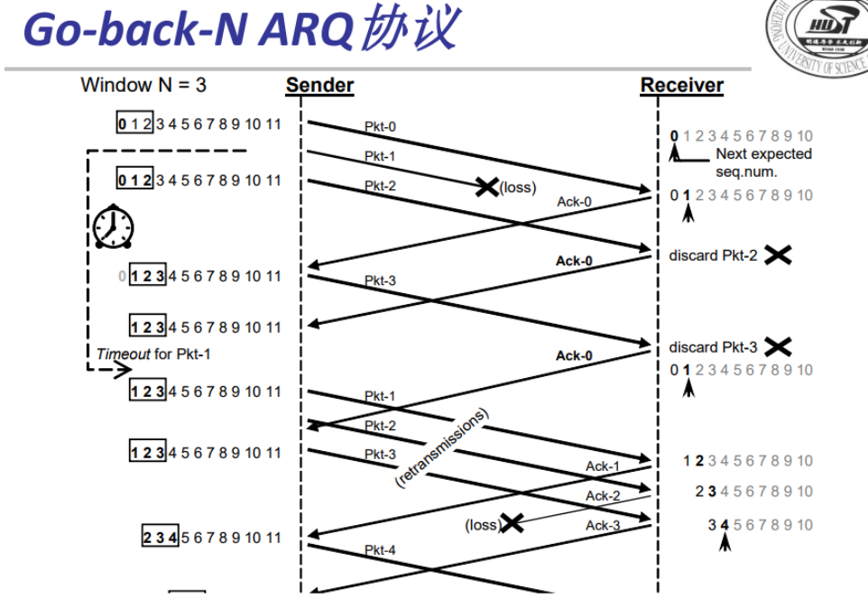

PlutoSDR建议通信系统
实验目的
利用Pluto实现通信系统，包括两个系统的有线通信、无线通信，三个系统的无线通信，使用协议为停止等待协议。
- 了解并熟悉软件无线电的概念，学习如何使用PlutoSDR搭建简单的无线通信系统
- 学习如何配置PlutoSDR，模拟计算机网络无线通信
- 通过实践掌握计算机网络课程中数据收发结构，并体会其好处
晨丰大佬的设想
我们在做完停止等待协议之后于是考虑到做滑动窗口协议。但经过思考之后我们认为用matlab做滑动窗口是有问题的，或者做出来的滑动窗口是伪滑动窗口。
首先sender和receiver必然是两个不同的程序，那么我们先从sender上来分析，在sender执行的过程中，我们固定了发送窗口的大小，此时sender会连续发送窗口内帧序号对应的数据帧.
按照matlab的顺序执行，这时倘若当发送完毕后，接收端回复ACK并且让发送端收到，那么窗口会很自然的往后移动，这是没有问题的。但是倘若我们在发送端还未发送完窗口内的帧序号，发送端就收到了回复的ACK，那么按照程序的执行顺序，此时我们还在执行发送数据帧，所以此时无法接收到回复的ACK。
也就是说这里我们必须要将发送端的接受和发送分开进行。也就是说想要实现健全的滑动窗口协议，必须要采用多线程的方法，然而matlab不支持多线程。所以最后做不出真正健全的滑动窗口。